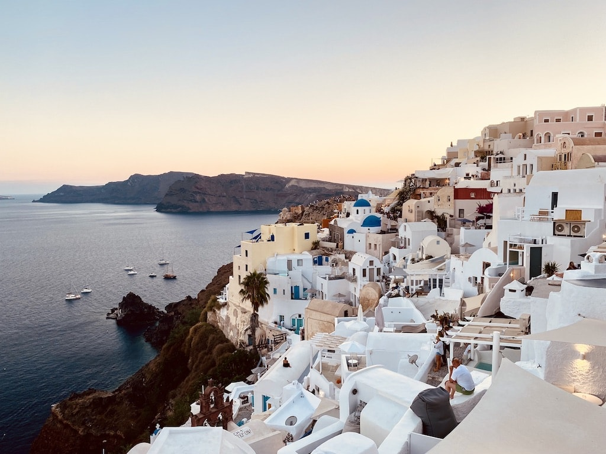
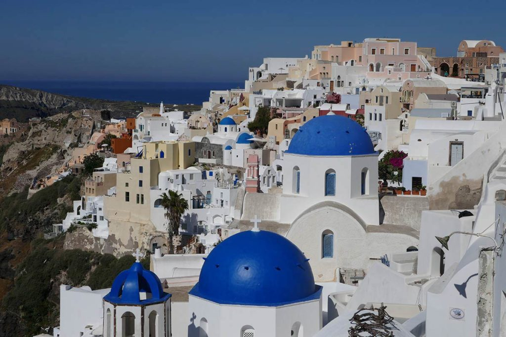

Dream Destinations
Explore some of the world's most beautiful destinations and discover what makes each place worth adding to your travel list.

Santorini, Greece
Santorini, Greece is one of the most recognizable destinations in the Mediterranean, known for its whitewashed buildings, blue-domed churches, dramatic cliffs, and beautiful views of the Aegean Sea. Visitors can spend their days exploring the narrow streets of Oia and Fira, relaxing on unique volcanic beaches, enjoying traditional Greek food, or taking a boat tour around the island. Santorini is also famous for its incredible sunsets, especially in Oia, where travelers gather in the evening to watch the sun set over the water. Whether you are interested in sightseeing, beaches, local culture, food, or simply relaxing with an amazing view, Santorini offers a variety of experiences that make it an unforgettable travel destination.

Explore Oia
Walk through Santorini's famous whitewashed streets, explore local shops and cafés, and watch one of the island's famous sunsets.

Relax at the Beach
Visit Santorini's unique volcanic beaches and spend the day swimming, relaxing, and enjoying views of the Aegean Sea.
Quick Travel Guide:
Best For: Beaches, couples, friends, sightseeing and food
Best Time to Visit: April-June and September-October
Don't Miss: Oia sunset, Fira, Red Beach and a sunset cruise
Travel Style: Relaxing, scenic and cultural
More Dream Destinations

Amalfi Coast, Italy
Colorful coastal towns, Italian cuisine, beaches and Mediterranean views.

Nassau, Bahamas
Turquoise waters, tropical beaches, snorkeling and island adventures.

Paris, France
Iconic landmarks, cafés, museums, shopping and French culture.